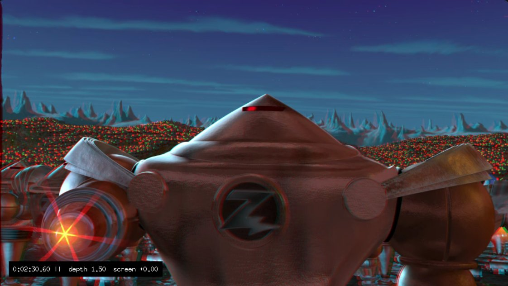
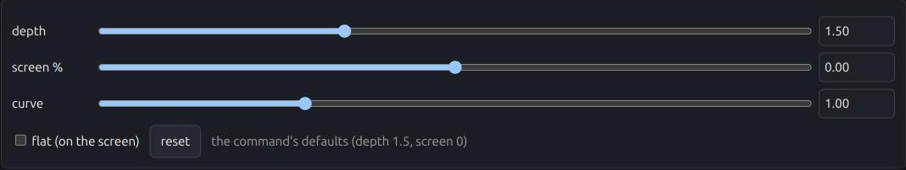
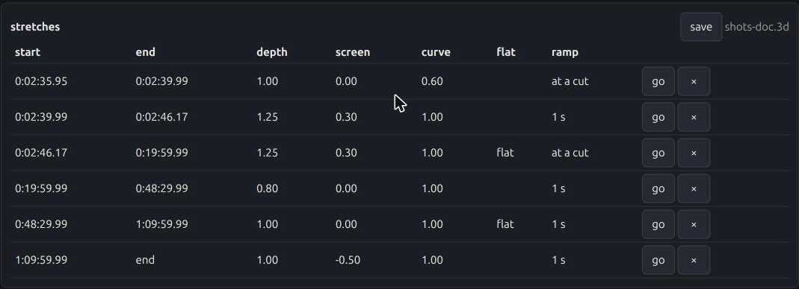
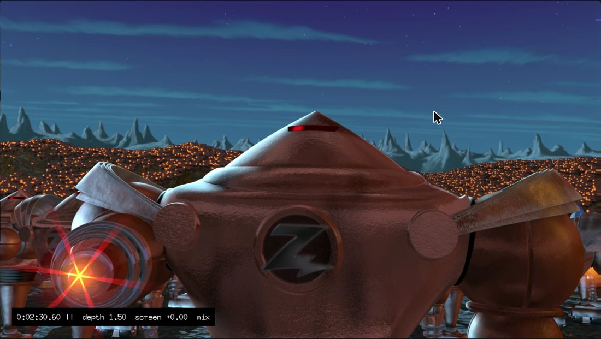

Grading a film's 3D by eye
A manual for --3d-grade: the web page and the headset that drive a 2D-to-3D conversion live, shot by shot, and the conversion that applies what you set. What the conversion does with the depth, and how it was measured, is in 2d-to-3d.md; the flags are in the command's README.
What grading is, and when a film needs it
--to-3d gives every picture a depth and makes two eyes from it. Its defaults are the 3D discs' own depth, measured over many films, and most of a film looks right at them. Some shots do not:
- A shot the depth network reads wrongly: rows of people or things seen from below, which it stacks away behind each other when the film has them side by side (the curve knob).
- A shot that comes too far out of the screen, or sits too deep behind it (depth and screen).
- A picture that belongs flat on the screen: a title card, a screen within the picture, a 2D insert, a map (flat). The end credits are found and made flat on their own.
- A whole film that wants a little more or less than the defaults.
Grading sets the knobs for stretches of the film and writes them to a shots file, which the conversion proper reads. Nothing is converted while you grade: the film is converted live as it plays, as fast as it plays, and you watch it on a 3D screen or in a headset while you turn the knobs.
What you need
- A machine with an NVIDIA GPU: the depth network runs on it faster than the film plays, and NVENC encodes the live stream.
- The film: an MKV, MP4 or MOV, or the disc image itself.
- Something that shows 3D: a 3D television or projector with a player that takes a live stream (Kodi, VLC), or a headset with a browser (the Meta Quest). A laptop and red-cyan glasses do for a rough check.
- Optionally the film's own 3D, where one exists, to compare against (
--3d-reference).
Starting
bdtools --input "Film (2020).mkv" --output "Film (2020).3d" --to-3d --3d-grade :8420The command prints where everything is:
bdtools: --3d-grade: the controls at http://192.168.1.87:8420/, the 3D stream at http://192.168.1.87:8420/stream.ts (full side by side); the grade goes to Film (2020).3d
bdtools: --3d-grade: for a headset, https://192.168.1.87:8421/ (its certificate is this machine's own: accept it once), then Enter VR--output is the shots file the grade is written to, at every change. Give it a name you will pass to the conversion later. To start from a grade made earlier, or one written by hand, add --3d-shots FILE (the same file as --output is fine). --start 1:02:00 opens the film there.
Any flag of --to-3d goes on the grading command and becomes its defaults: --3d-depth, --3d-screen, --3d-curve, --depth-model, --3d-refine, --3d-fill, --3d-screen-size. The page shows the defaults as "the command's defaults" and every stretch is set against them, so the conversion proper must be run with the same flags (see the conversion).
Watching it
The stream is full side by side, 1080p an eye, H.264 in a transport stream, at http://HOST:8420/stream.ts. Any way of playing that live works:
- Kodi on a box at the screen: a
.strmfile holding the address, named with the 3D tag your library uses, as the conversions are (Film (2020) 3D FSBS.strm), so Kodi picks the side-by-side mode and the television shows it in 3D. Kodi buffers a few seconds by default, which is the delay between a turn of a knob and the screen; its cache settings bring it under a second. - VLC (also on Android and a television): open the address as a network stream and set the 3D mode to side by side.
- The headset's browser: see In the headset. It needs no player.
- The page's own preview, under the controls: the left eye alone, both eyes, or a red-cyan anaglyph for paper glasses. A tenth of a second behind the server, so it is the quickest check that a turn did what you meant.


A readout is drawn into the bottom of both eyes of the stream, at the screen's depth: the time, the play state, the knobs, the stretch and the view. It is there so the screen tells you the state while your hands are on the page or the controllers; the "readout in the stream" box turns it off for clean viewing.
The page
Every control says what it does and when to use it when hovered. From the top:

Transport. Play or pause; a picture back or on; ten seconds either way; the cut before or after. A paused picture keeps its depth, so a knob turned on a paused picture shows at once (after the player's buffer).
The bar. The film, with the stretches as blue bands (the current one lighter), the cuts seen so far as ticks, and the playhead. Click to seek. Under it, the time, the film's length, and where this picture's nearest and farthest points come out, in percent of the width and in pixels: a near point much past 1% in front of the screen strains the eyes.
The knobs. Each a slider and a number; the keys turn them too.
| Knob | What it does | When to turn it |
|---|---|---|
| depth | The depth scaled. 1 is the 3D discs' own; the slider runs 0.2 to 4. | A shot that looks flat (more), or one whose depth strains (less). |
| screen % | The whole depth moved nearer (positive) or farther, in percent of the width. | To bring a shot out of the screen or set it back without changing its depth. |
| curve | The depth bent within the shot's range: 1 as the network gives it; below 1 what sits between the shot's farthest and nearest comes forward; above 1 it goes back. | Rows the network stacks away behind each other when the film has them side by side (a crowd or a line of things seen from below): 0.5 to 0.7 brings them to where a disc has them. Not as a default: on ordinary shots it measures worse. |
| flat | No depth: the picture on the screen. | Title cards, screens within the picture, maps, 2D inserts. |

reset puts the stretch back to the command's defaults. The text beside it says which stretch the knobs grade, or that the picture is at the defaults.
The film's own 3D, when there is a reference (see Comparing): ours, disc, mix, diff, align.
Stretches. The table of what is graded: start, end, the knobs, flat, and how each comes in (at a cut, or eased over seconds). go seeks to a stretch's start, × removes it: the stretch before runs on over what it covered, or the defaults do when there is none. save writes the file; it is written at every change anyway, and "saved" or "unsaved" at the top says which.

Keys
| Key | Does |
|---|---|
| Space | play or pause |
| ← → | a picture back or on |
| Shift+← Shift+→ | ten seconds |
| [ ] | the cut before or after |
| ↑ ↓ | depth ±0.05 |
| PgUp PgDn | screen ±0.1 |
| , . | curve ±0.05 |
| f | flat |
| d, m, x, o | the disc's 3D, the mix, the difference, ours |
| s | save |
How a turn becomes a stretch
You need not mark stretches first. Turn a knob and a stretch is made for it:
- From the last cut, when one is within two seconds before the picture shown. A hand reacts to a shot a moment late, so the stretch starts where the shot did and the change is at the cut, where no eye sees it. The cuts are found as the film plays (a picture whose thumbnail differs enough from the one before), so the bar shows them for what has been played; a dissolve is not a cut.
- From the picture shown otherwise, eased in over a second (
ramp=1in the file), which the eye does not notice where a jump would show.
The stretch runs to the next stretch's start, or to the end of the film. A turn within a stretch changes that stretch. So the pattern is: play, see a shot that is off, pause, turn until it is right, play on. To grade one shot only, play to its end and turn any knob back to the defaults there (or press reset), which starts the next stretch at the next cut.
To grade a whole film a little differently, set --3d-depth and --3d-screen on the command instead, as its defaults, and grade only the shots that differ.
A session, step by step
- Start the server, open the page on a laptop or phone, start the player at the screen (or enter VR).
- Play from the start. Watch the near and far readings and the picture. Most shots will be right; let them pass.
- At a shot that is off, pause (Space, or the trigger in VR). Step back with ← until the shot looks the same as what caught your eye, and turn the knob. Check at a second picture of the same shot (→ or play a moment).
- Play on. At the shot's end nothing more is needed: the stretch ends where the next one starts, or at the film's end, and the next shot's grade is whatever was set before. If the next shot should be at the defaults, press reset there.
- At the end, "saved" at the top says the file is current. Close the server with Ctrl-C.
- Run the conversion with the file (below). The grade can be resumed and refined any time: start the server again with
--3d-shots FILE.
The hover labels on the page and the foot of the VR panel repeat the essentials of this manual, control by control.
In the headset
A headset's browser shows the same page over HTTPS, on the next port: https://HOST:8421/. The certificate is the machine's own, so the browser asks once; accept it. WebXR needs the secure page; a plain HTTP page on a LAN address has no Enter VR button.
Enter VR puts the picture on a four-metre screen, each eye its own, with the page's controls on a panel to the right. The right controller's ray puts a cursor on the panel and the trigger presses what is under it; holding the trigger on a slider drags it. The foot of the panel says what the cursor is over and when to use it. The panel has, from the top: the time and the near and far readings, transport, the three knobs as sliders with step buttons, flat, reset, the readout and save, the views when there is a reference, the screen's size, the stretch and a button to remove it, and the timeline, pressed to seek.

The controllers work without the panel too:
| Controller | Does |
|---|---|
| right trigger | presses the panel; off the panel, play or pause |
| right stick up and down | depth ±0.05 |
| right stick left and right | screen ±0.1 |
| right grip | flat |
| A, B | a picture on, back |
| left trigger | ours, the disc's 3D, the mix, round again |
| left stick left and right | the cut before, after |
| X, Y | ten seconds back, on |
| both grips, held a second | leave VR |
"smaller" and "bigger" change the screen's size in VR, which is how much of your view it fills, as a seat nearer or farther; the depth does not change with it. The page decodes the stream itself in VR and asks the headset for a 72 Hz display, where 24 pictures a second sit evenly. The Quest's own browser was the one tried; what the page sees (the browser, each step into VR, errors, the frames shown) goes to the server's log.
Comparing with the film's own 3D
Where a film has a 3D release of its own, the sharpest way to grade is against it. --3d-reference FILE takes it, a side-by-side or over-under file at the conversion's size (an MVC disc converted by bdtools, say):
bdtools --input "Film (2020).mkv" --output "Film (2020).3d" --to-3d --3d-grade :8420 \
--3d-reference "Film (2020) 3D FSBS.mkv"The page gains a row of views:

- ours: the conversion (the key
o). - disc: the film's own 3D at the same moment (
d). Switch back and forth to see what the stereographer did with the shot. - mix (
m): the left eye kept, the right eye a blend of the disc's and ours. Where the two depths agree the picture fuses; where they differ it doubles by exactly the difference. Turn the knobs until the doubles merge. - diff (
x): both eyes the difference of the two right eyes, mid grey where they agree, an embossed edge where they do not. The sharper tool for a small mismatch, and it shows at a glance whether the near or the far is off.


- align: the two files' clocks differ when their discs do. Press it on a paused picture and the server finds that picture in the reference, eight seconds either side, and keeps the offset. The text beside it says how far ahead the reference runs, whether it is aligned, and when the reference has no picture at a place.
The simplest reference is the 3D file itself: give a side-by-side conversion of an MVC disc as the --input of --3d-grade, with no --3d-reference. Its left eye is converted and its own right eye is the reference, on one clock, so disc flips between the stereographer's right eye and ours made from the same left eye. The disc's right eye is a second camera and sees behind edges where ours cannot: judge the depth of the scene, not the edges.
The shots file
What the page writes is a text file you can read and edit, a line a stretch:
# START [END] SETTINGS...
0:12:30 0:13:05 depth=0.8 screen=0 curve=1
1:02:10.5 1:02:40 flat
1:30:00 screen=-1 ramp=1
2:01:12 curve=0.6Times are the film's as a player shows them. A line without an end runs to the next line's start, or to the end. depth=, screen= and curve= are the knobs; flat puts the stretch on the screen; ramp= is the seconds a stretch that begins within a shot eases in over. What a line does not set is the command's default; where lines overlap the later one wins. A # starts a comment. The same file is --3d-shots's, so a grade can be written by hand from notes, or a written one touched up.
The conversion
The conversion proper reads the file with --3d-shots, with the same --to-3d flags the grading command had, so that "the command's defaults" are the same ones:
bdtools --input "Film (2020).mkv" --output "Film (2020) 3D FSBS.mkv" --to-3d \
--3d-shots "Film (2020).3d"Any output of --to-3d takes it: full or half side by side, over-under, MVC, MV-HEVC for a headset, a Blu-ray 3D disc image. The file is part of what an interrupted conversion must match to resume, so a changed grade starts the conversion over (it says so).
When something is off
- No Enter VR button: the page is open over HTTP. Use the HTTPS address the command printed, and accept the certificate. If the command said "no HTTPS", the next port was taken.
- The preview says the browser cannot play the stream: the page's preview needs a browser that plays H.264 through Media Source Extensions (Chrome, Edge, Safari, the Quest's). The stream itself still plays in a player.
- The screen lags the knobs by many seconds: the player's own buffer. Turn Kodi's cache down, or use the page's preview to see the turn and the screen to judge it.
- A cut is missing from the bar: cuts are found as the film plays, so skipping over a stretch skips them; and a dissolve is not a cut. Turn the knob at the picture instead; the change eases in over a second.
- The stream does not start: the live stream needs NVENC, an NVIDIA GPU. The command's log says what it could not open.
- The file says "unsaved": a write failed (the log says why);
sor the save button tries again.